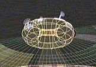

Vuoto |
|
||||
  |
Anomalia spaziale presente nel quadrante Delta. Si tratta di una struttura
chiusa di forma vagamente toroidale avvolta da uno strato inerte di
subspazio.
Materia ed energia non possono penetrare questo tipo di anomalia. Apparentemente
in modo casuale, dall'interno dell'anomalia hanno origine dei gorghi che
attirano la materia solamente dall'esterno verso l'interno. Prima di erompere
verso l'esterno, gli imbuti creano delle massicce forze di gravitoni.